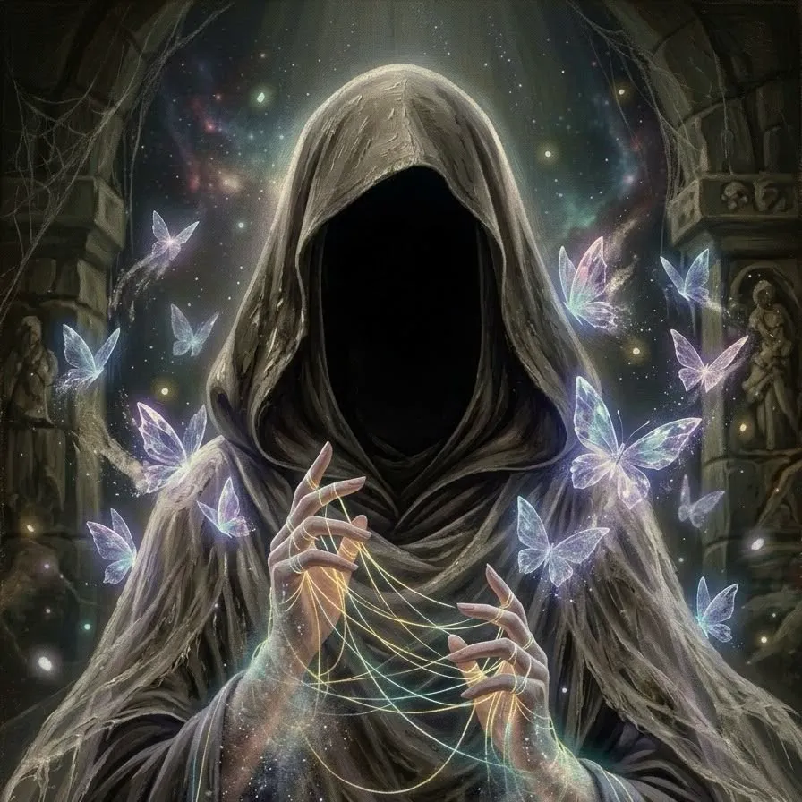

VEIL / 織夢術式檔案
INTERACTIVE SPELL STUDY — 001
THE ART OF WEAVING DREAMS
織夢術士Dreamweaver
蝶影牽起金色長絲，將片刻幻夢織入現實。
03技能
演出
演出
10觸發
分支
分支
螺旋纏繞 · 四散勒緊
準備就緒
DREAMBOUND / COMBAT PREVIEW
FX · 001
THE DREAMWEAVER

織夢術士
THE THREADKEEPER
100 / 100HP
夢蝶迷思
THE NIGHTMARE
夢魘殘像
TRAINING APPARITION
1,000 / 1,000HP
GOLDEN THREADS · CRYSTALLINE WINGS
棋盤格僅供預覽 · 特效層透明
等待施放00.00 / 04.80 S
拖曳時間軸可逐段檢視。頭像與血量僅為演出測試，非正式遊戲數值。SPACE 暫停 · R 重播